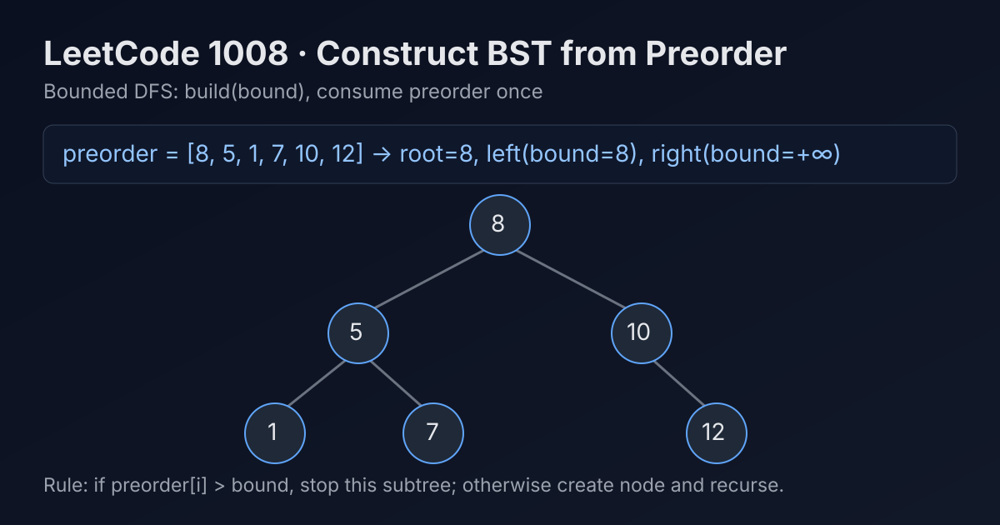

LeetCode 1008: Construct Binary Search Tree from Preorder Traversal (Bounded DFS on Preorder Stream)
LeetCode 1008BSTDFSToday we solve LeetCode 1008 - Construct Binary Search Tree from Preorder Traversal.
Source: https://leetcode.com/problems/construct-binary-search-tree-from-preorder-traversal/

English
Problem Summary
Given an array preorder that is guaranteed to be a valid preorder traversal of a BST, construct and return the BST root.
Key Insight
Preorder is root → left → right. If we scan preorder once with an index, each recursive call only needs an upper bound:
- If current value > bound, it does not belong to this subtree.
- Otherwise create node, build left with bound=node.val, then build right with previous bound.
Algorithm
1) Keep global/index pointer i over preorder.
2) Define build(bound).
3) If i == n or preorder[i] > bound, return null.
4) Create node from preorder[i++].
5) node.left = build(node.val).
6) node.right = build(bound).
7) Return node.
Complexity Analysis
Each value is consumed once.
Time: O(n).
Space: O(h) recursion stack, worst-case O(n).
Reference Implementations (Java / Go / C++ / Python / JavaScript)
class Solution {
private int i = 0;
public TreeNode bstFromPreorder(int[] preorder) {
return build(preorder, Integer.MAX_VALUE);
}
private TreeNode build(int[] preorder, int bound) {
if (i == preorder.length || preorder[i] > bound) return null;
TreeNode root = new TreeNode(preorder[i++]);
root.left = build(preorder, root.val);
root.right = build(preorder, bound);
return root;
}
}func bstFromPreorder(preorder []int) *TreeNode {
i := 0
var build func(bound int) *TreeNode
build = func(bound int) *TreeNode {
if i == len(preorder) || preorder[i] > bound {
return nil
}
root := &TreeNode{Val: preorder[i]}
i++
root.Left = build(root.Val)
root.Right = build(bound)
return root
}
return build(int(^uint(0) >> 1))
}class Solution {
public:
int i = 0;
TreeNode* bstFromPreorder(vector& preorder) {
return build(preorder, INT_MAX);
}
TreeNode* build(vector& preorder, int bound) {
if (i == (int)preorder.size() || preorder[i] > bound) return nullptr;
TreeNode* root = new TreeNode(preorder[i++]);
root->left = build(preorder, root->val);
root->right = build(preorder, bound);
return root;
}
}; class Solution:
def bstFromPreorder(self, preorder: List[int]) -> Optional[TreeNode]:
i = 0
def build(bound: int) -> Optional[TreeNode]:
nonlocal i
if i == len(preorder) or preorder[i] > bound:
return None
root = TreeNode(preorder[i])
i += 1
root.left = build(root.val)
root.right = build(bound)
return root
return build(float('inf'))var bstFromPreorder = function(preorder) {
let i = 0;
function build(bound) {
if (i === preorder.length || preorder[i] > bound) return null;
const root = new TreeNode(preorder[i++]);
root.left = build(root.val);
root.right = build(bound);
return root;
}
return build(Infinity);
};中文
题目概述
给你一个数组 preorder，它保证是某棵 BST 的前序遍历结果。请构造并返回该 BST 的根节点。
核心思路
前序遍历顺序是 根 → 左 → 右。使用一个全局下标顺序读取数组，并给递归函数传入“当前子树允许的最大值上界”。
- 若当前值大于上界，说明它不属于当前子树。
- 否则创建节点，先递归构建左子树（上界=当前节点值），再构建右子树（上界保持父级上界）。
算法步骤
1）维护下标 i 指向当前待处理前序值。
2）定义递归函数 build(bound)。
3）若 i == n 或 preorder[i] > bound，返回空。
4）创建节点 root = preorder[i++]。
5）构建左子树：root.left = build(root.val)。
6）构建右子树：root.right = build(bound)。
7）返回 root。
复杂度分析
每个元素只被消费一次。
时间复杂度：O(n)。
空间复杂度：递归栈 O(h)，最坏 O(n)。
多语言参考实现（Java / Go / C++ / Python / JavaScript）
class Solution {
private int i = 0;
public TreeNode bstFromPreorder(int[] preorder) {
return build(preorder, Integer.MAX_VALUE);
}
private TreeNode build(int[] preorder, int bound) {
if (i == preorder.length || preorder[i] > bound) return null;
TreeNode root = new TreeNode(preorder[i++]);
root.left = build(preorder, root.val);
root.right = build(preorder, bound);
return root;
}
}func bstFromPreorder(preorder []int) *TreeNode {
i := 0
var build func(bound int) *TreeNode
build = func(bound int) *TreeNode {
if i == len(preorder) || preorder[i] > bound {
return nil
}
root := &TreeNode{Val: preorder[i]}
i++
root.Left = build(root.Val)
root.Right = build(bound)
return root
}
return build(int(^uint(0) >> 1))
}class Solution {
public:
int i = 0;
TreeNode* bstFromPreorder(vector& preorder) {
return build(preorder, INT_MAX);
}
TreeNode* build(vector& preorder, int bound) {
if (i == (int)preorder.size() || preorder[i] > bound) return nullptr;
TreeNode* root = new TreeNode(preorder[i++]);
root->left = build(preorder, root->val);
root->right = build(preorder, bound);
return root;
}
}; class Solution:
def bstFromPreorder(self, preorder: List[int]) -> Optional[TreeNode]:
i = 0
def build(bound: int) -> Optional[TreeNode]:
nonlocal i
if i == len(preorder) or preorder[i] > bound:
return None
root = TreeNode(preorder[i])
i += 1
root.left = build(root.val)
root.right = build(bound)
return root
return build(float('inf'))var bstFromPreorder = function(preorder) {
let i = 0;
function build(bound) {
if (i === preorder.length || preorder[i] > bound) return null;
const root = new TreeNode(preorder[i++]);
root.left = build(root.val);
root.right = build(bound);
return root;
}
return build(Infinity);
};
Comments